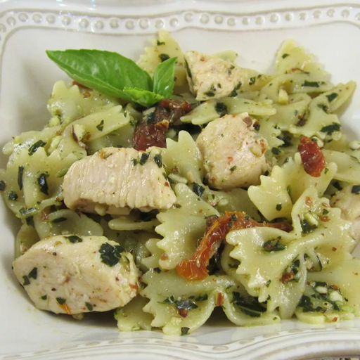

Pesto Pasta with Chicken

Description
This chicken pesto pasta is easy and delicious. Serve with crusty bread and salad for a quick dinner.
se as much or as little pesto sauce as you like. Using homemade pesto will taste even better, but it adds to prep time. Enjoy!
Ingredients
- 1 (16 ounce) package bow tie pasta
- 1 teaspoon olive oil
- 2 cloves garlic, minced
- 2 skinless, boneless chicken breasts, cut into bite-sized pieces
- 1 pinch crushed red pepper flakes, or to taste
- ½ cup pesto sauce
- ⅓ cup oil-packed sun-dried tomatoes, drained and cut into strips
Steps
- Bring a large pot of lightly salted water to a boil. Add pasta and cook until al dente, 8 to 10 minutes; drain.
- Heat oil in a large skillet over medium heat. Sauté garlic until tender, then stir in chicken and season with red pepper flakes. Cook until chicken is golden and cooked through.
- Combine pasta, chicken, pesto, and sun-dried tomatoes in a large bowl; toss to coat evenly.